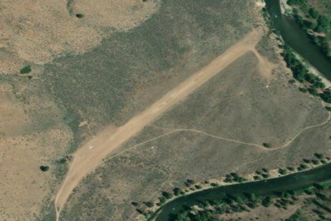

THOMAS CREEK
2U8 · ID

Aerial imagery source: Esri, Vantor, Earthstar Geographics, and the GIS User Community
| Identifier | 2U8 |
|---|---|
| State | ID |
| Runway length | 2,100 ft |
| Runway width | 75 ft |
| Surface | TURF-DIRT |
| Runway | 03/21 |
| Elevation | 4,415 ft |
| Ownership | public |
| CTAF | 122.9 |
| Coordinates | 44.72330555, -115.00397222 |
Notes
[idaho_itd] State Airfield [shortfield] Location Overview Thomas Creek is a state-owned airstrip located in the Frank Church River of No Return Wilderness, situated between the Indian Creek and Mahoney Creek airstrips along the Middle Fork of the Salmon River. It lies approximately 31 miles north of Stanley, Idaho. The strip sits in the Middle Fork Salmon River valley at an elevation of 4,415 feet above sea level, with a runway measuring 2,100 by 75 feet — generous enough for larger bush planes and reported to be in good condition. Camping & Recreation There are no formal facilities at Thomas Creek, but there are spots to pitch a tent along the river or next to your airplane, though the runway area tends to be dry and dusty in summer months. The strip provides access to the Sunflower Hot Springs and the exclusive Middle Fork Lodge. The surrounding wilderness offers world-class fishing for salmon and steelhead in the Middle Fork, and the area is also a popular stopping point for rafters floating one of America's premier whitewater rivers. Notes & Warnings The FAA recommends landing on Runway 21 and departing on Runway 03. A go-around is noted as extremely difficult, and there is no winter maintenance performed at this airstrip. Density altitude is a significant factor given the canyon terrain and elevation. Pilots should be experienced in mountain flying before attempting a landing here, as the approach into the canyon requires careful assessment before committing to a final. The strip is uncontrolled and lacks any weather reporting — the nearest weather station is Challis Airport, approximately 36 nautical miles away. History Thomas Creek has been a fixture of Idaho backcountry flying for decades, serving as a critical access point to one of the most remote stretches of wilderness in the lower 48 states. As far back as the 1960s, pilots were flying light aircraft into Thomas Creek to chase salmon runs on the Middle Fork of the Salmon River, with the strip already established as a known destination among backcountry aviators. The airstrip has long served outfitters, anglers, and wilderness travelers for whom it represents the only practical way in short of a multi-day pack trail or a river raft. Its place within the Frank Church River of No Return Wilderness — one of the largest contiguous roadless areas in the United States — has cemented Thomas Creek's reputation as one of Idaho's most storied and challenging backcountry strips.